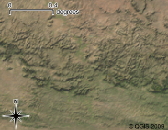

Mètodes d'Investigació Criminològica Avançada
Sessió 15: Inferència; Investigacions Socio-Espacial; Revisió
Inferència
Per què encara trobem autocorrelació espacial?
Investigacions Socio-Espacial
Tita & Greenbaum, Crime, Neighborhoods, and Units of Analysis: Putting Space in Its Place, in Putting Crime in its Place (2009)influència social
- component espacial
- component de xarxa
enfocament deductiu
- identificar el procés substantiu de la influència
- especificar correctament la matriu d'autocorrelació
- utilitzar un model estadístic apropiat
processos d'influència
- l'exposició
- proximitat als delinqüents
- el contagi / la difusió
- els individus canvien el comportament, com a resultat de contacte
exemples
- mercat de la droga
- bandes
la construcció de matrius pesos més complexes
Revisió
Ontologia
- Objectivisme
- Constructivisme
Epistemologia
- Positivisme
- Interpretativismo
Mètode científic
- Pregunta
- Hipòtesi
- Predicció
- Proves
- Anàlisi
- Revisió
- Replicació
- Falsificació
Inferència
- Descriptiu
- Causal
Criteris
- Fiabilitat
- Replicabilitat
- Validesa
Tipus de disseny
- Experimental
- Quasiexperimental
- Transversals
- Longitudinal
- Estudi de cas
- Comparatiu
- Ciutat Vella: 30.2% d'entrevistats (\(n=400\)) han estat victimes d'un o més fets que han considerat delictius durant l'any anterior
- Quin percentatge de la població de Ciutat Vella podem inferir de aixo?
- Quin és l'interval de confiança del 95%?
Estimació Puntual
$$\hat{\theta} = \bar{x}$$Interval de confiança
$$IC_{100\%-\alpha} = \hat{\theta} \pm z_{\alpha}\sqrt{\frac{\hat{\theta}(1-\hat{\theta})}{n}}$$$$IC_{95\%} = \left(.257, .347\right)$$
- Sant Marti: 26.6% d'entrevistats (\(n=400\)) han estat victimes d'un o més fets que han considerat delictius durant l'any anterior
- Quin percentatge de la població de Sant Marti podem inferir de aixo?
- Quin és l'interval de confiança del 95%?
$$IC_{95\%} = \left(.223, .309\right)$$
| Barri | \(IC_{95\%}\) |
|---|---|
| Ciutat Vella | (.257, .347) |
| Sant Marti | (.223, .309) |
Dades
- vectorials
- raster
Dades vectorials

Dades vectorials

Dades vectorials

Dades vectorials
- punts
- polilínies
- polígons
Dades vectorals: escala

Dades vectorals: escala

Dades vectorials
Eurostat Country ShapefilesDades raster
Dades raster

Capes

sistemes de referència de coordenades
Informació geogràfica
- interactiu o no interactiu
- dinàmica o estàtica
- contingut
- usuari
Tipus de mapes
Tasques de SIG i de l'analisi espacial
el·lipse de desviació estàndard
Modifiable Areal Unit Problem (MAUP)
El problema de les unitats d'àrea modificables
Autocorrelació
Mesures de Autocorrelació
I de Moran
$$ I = \frac{N}{S_0} \sum_{i=1}^N\sum_{j=1}^N \frac{w_{ij}(x_i-\mu)(x_j-\mu)}{\sum_{i=1}^N (x_i - \mu)^2} $$$$ S_0 = \sum_{i=1}^N\sum_{j=1}^N w_{ij} $$
I de Moran
$$ E(I) = \frac{-1}{N-1} $$Model amb retard espacial en un variable independent
$$ y = \alpha + \beta X + \rho W X + \epsilon$$Model amb retard espacial en el variable dependent
$$ y = \alpha + \beta X + \rho W Y + \epsilon$$Model amb retard espacial en els variables dependent i independent
$$ y = \alpha + \beta X + \rho_1 W X + \rho_2 W X + \epsilon$$Model de errors espacials
$$ y = \alpha + \beta X + \epsilon$$ $$ \epsilon = \lambda W u + e$$Examen
- Entre 20 de març, 10:00, i 27 de març, 10:00 a Aula Global
- 1 hora